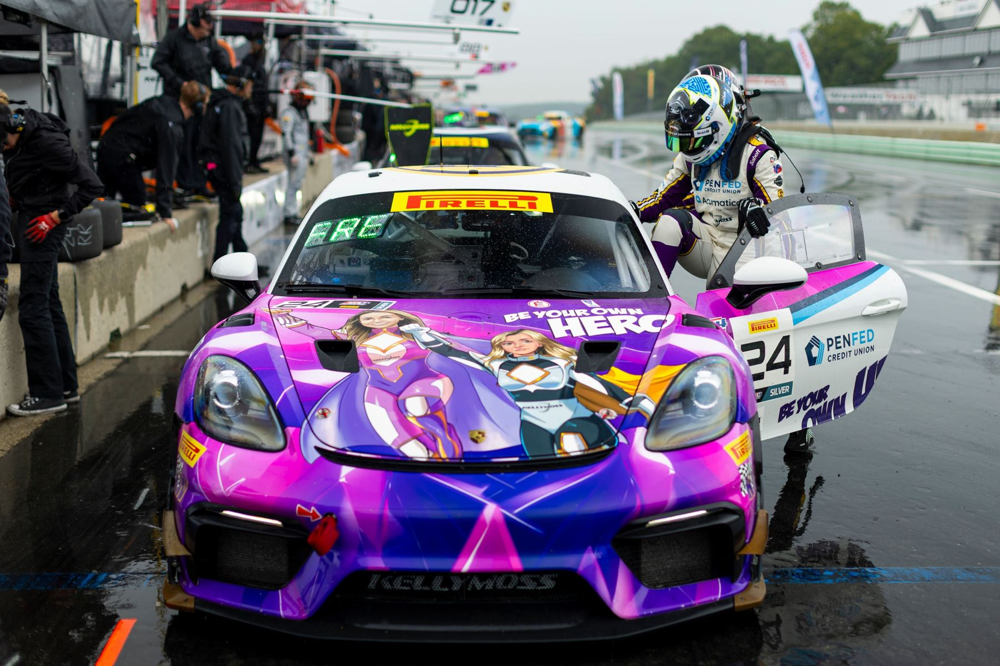
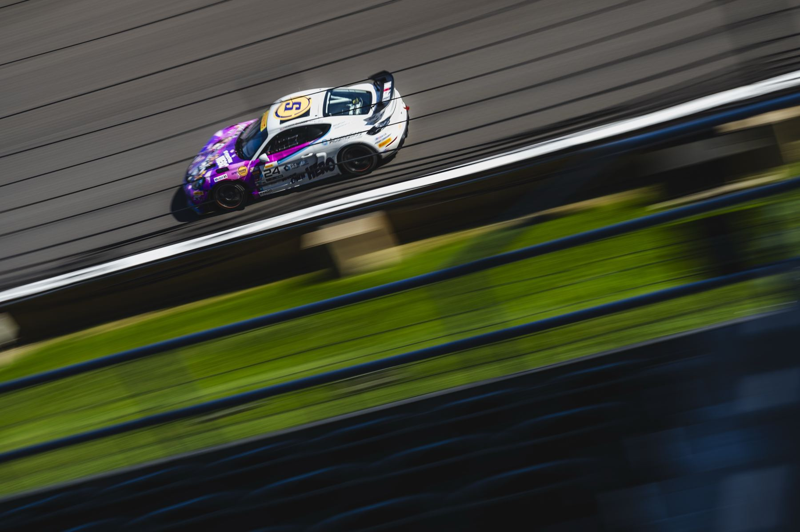

The 2026 season.
[Tell fans what you're racing in 2026: series, car, team, and goals.]
[00]Races
[Series]Championship
[Car #]Porsche 718 Cayman GT4


[Tell fans what you're racing in 2026: series, car, team, and goals.]
